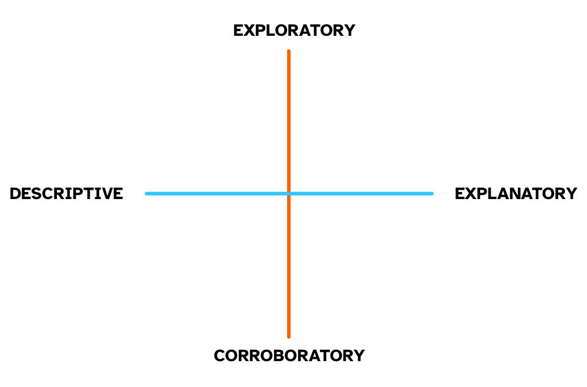
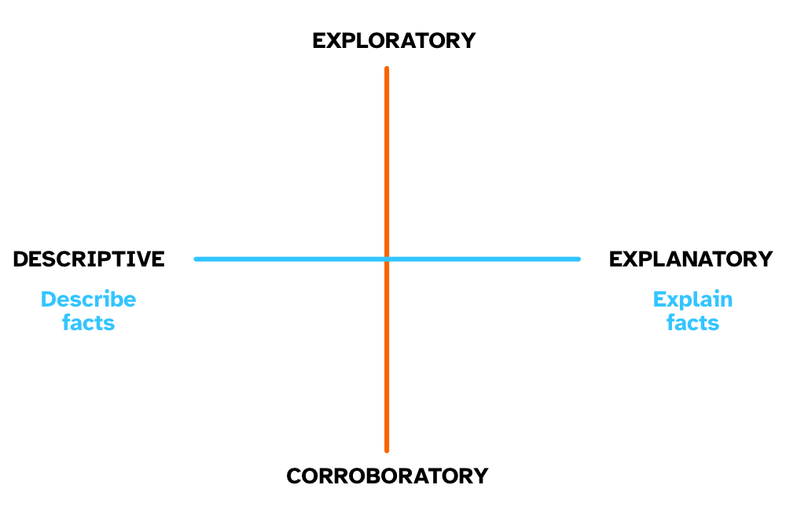
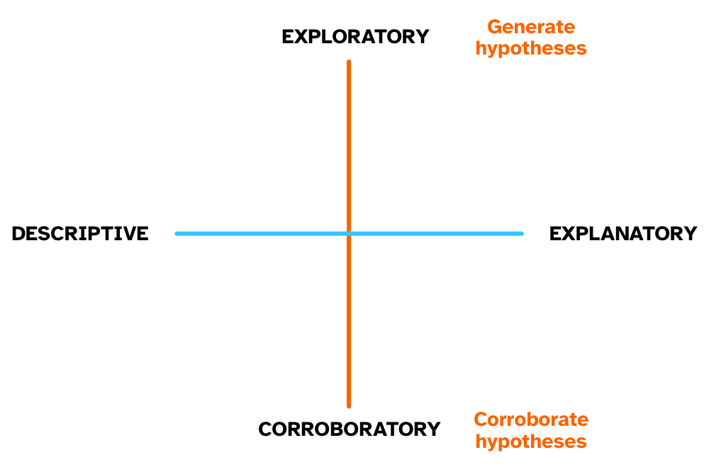
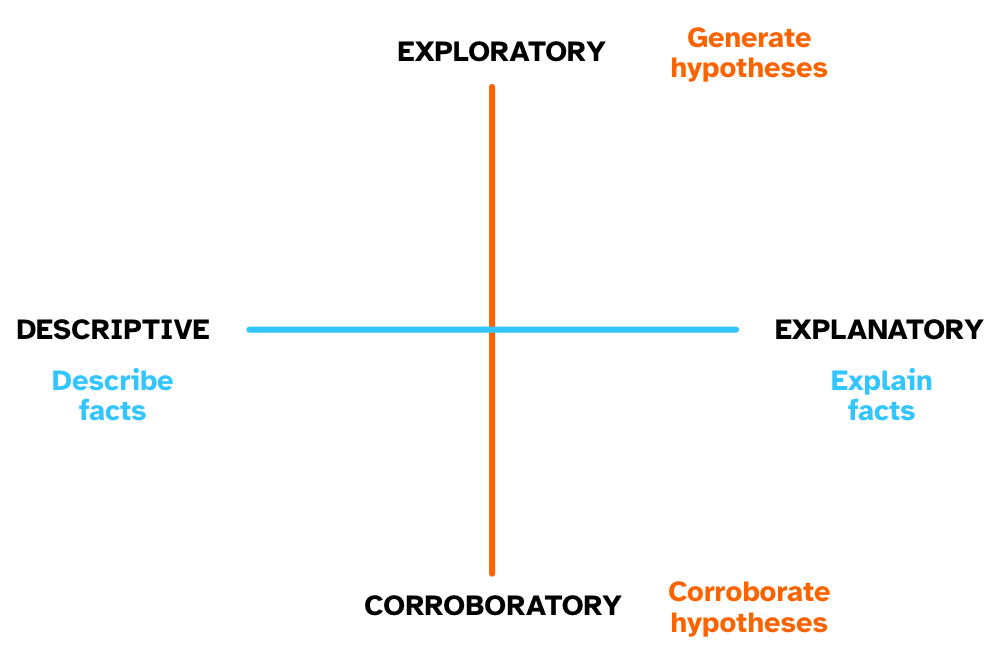
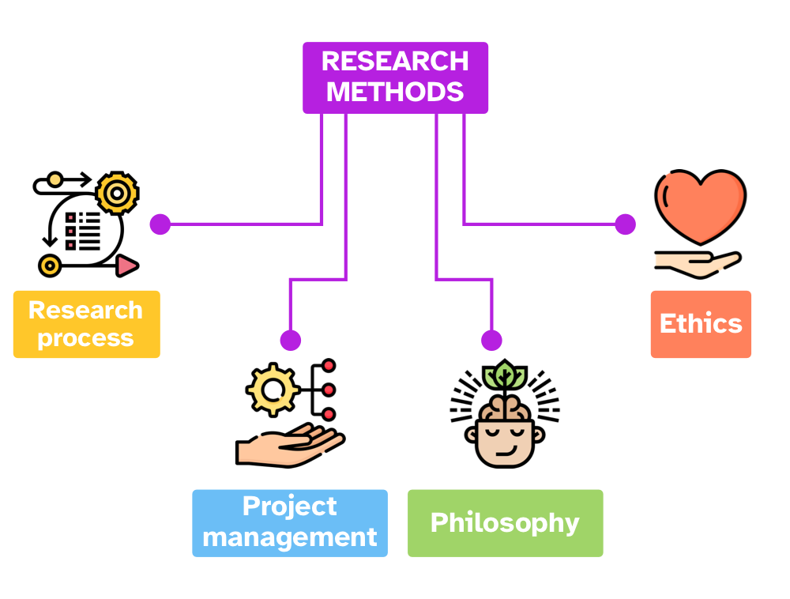
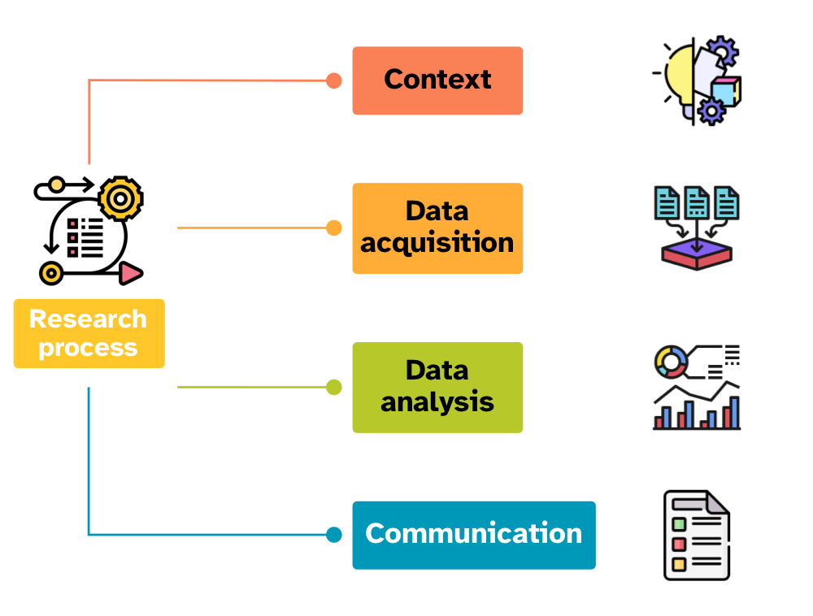
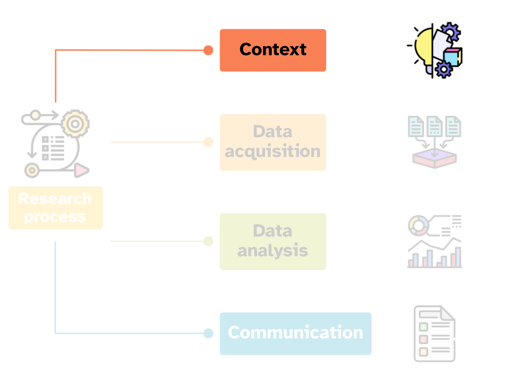
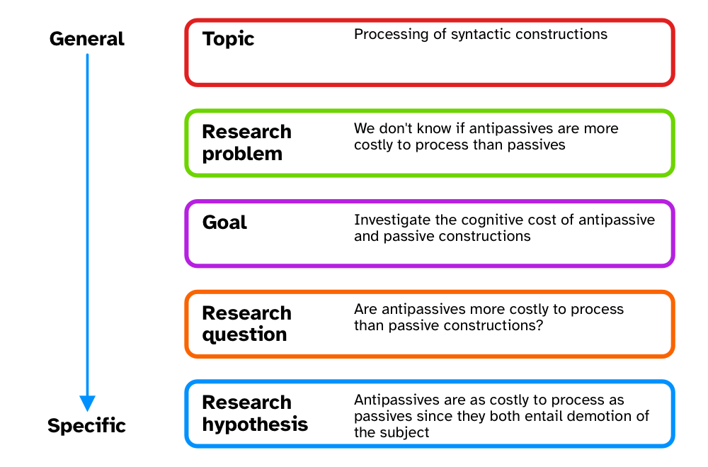

Empirical research
Introduction to empirical research methods
The golems of emprirical research
However, there is no wisdom in the golem. It doesn’t discern when the context is inappropriate for its answers. It just knows its own procedure, nothing else. It just does as it’s told.
—Richard McElreath, Statistical Rethinking
What is empirical research?
Empirical research
Empirical = data
Learning about the Universe through data and observation.
Find out about the etymology of empirical in your own time!
Axes of research types
The two axes of research type
Exploratory vs corroboratoy.
Descriptive vs explanatory.
Axes of research types

Descriptive vs explanatory

Exploratory vs corroboratory

Axes of research types

Types of research objectives
- Establish facts
- Fill a gap in knowledge.
- Accumulate evidence.
- Improve fit of framework to facts
- Improve how well a framework can describe and explain a phenomenon.
- Compare fit of different frameworks to facts
- Compare opposing hypotheses generated by two or more frameworks.
Types of research objectives: examples
Establish facts
- What are the uses of the Sanskrit verb gam ‘to go’.
Improve fit of framework to facts
- Strong exemplar-based models preclude the possibility of abstract representations.
- If the results of a study indicate that certain categorisation tasks seem to involve abstract representations, we update our exemplar-based framework to include abstractions.
Compare fit of different frameworks to facts
- In the sentence “Stefano emailed Bert. I saw him in DSB.”, the subjecthood hypothesis states that him refers to Stefano, while under the “syntactic parallelism” hypothesis him refers to Bert.
- We test these hypotheses using empirical data.
Research methods

Research process

Research context

Research context (Ellis and Levy 2008)

Research question and hypotheses
Research question
- Research questions are testable and precise questions whose answers directly address the problem.
Research hypothesis
Research hypotheses are statements (not questions) about the research problem.
Hypotheses must be testable and precise.
- A testable and precise hypothesis cannot include “may, could, might, in certain contexts” or any other vague expression!
Hypotheses are never true nor confirmed. We can only corroborate hypothesis, and it’s a long term process.
Research question and hypotheses: examples
Research questions
- What are the pragmatic uses of bro in the LGBTQ+ community?
- How do British Sign Language users mark evidentiality?
- Why do vowels tend to be shorter before voiceless consonants and longer before voiced ones?
Research hypotheses
- Demoted subjects cannot be placed in focus positions.
- High vowels are shorter than low vowels.
- Lexical change is driven by young female speakers in the working class but by old male speakers in the middle and upper classes.
In the next lecture…